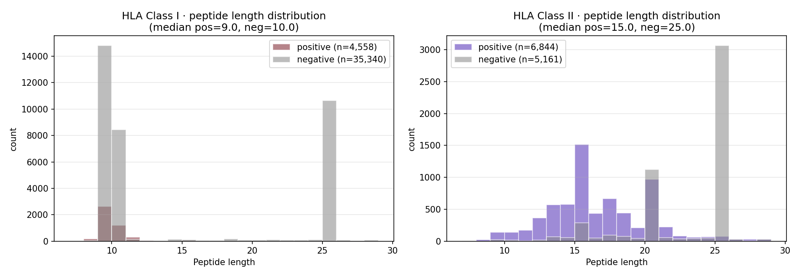

Class I (CD8 T-cell) vs Class II (CD4 T-cell) neoantigen prediction differs in peptide length (9-11 vs 13-25), assay type, curator distribution, and validation rate. We expose these systematically.

Figure · Class I peptides cluster tightly at 9aa (HLA-A/B/C groove constraint). Class II peptides span 13-25aa (more open MHC-II groove). Both classes show pos vs neg distributions overlapping — length alone does not discriminate immunogenicity within class.
| Property | Class I | Class II | Note |
|---|---|---|---|
| n records | 71,160 | 11,984 | Class I 6× larger corpus |
| n unique alleles | 163 | 272 | Class II nominally more diverse but heavily DR-biased |
| Validation rate | 11.4% | 57.0% | ★ Class II positive-class biased (curation artifact) |
| Median pep len | 9 | 20 | canonical groove difference |
| Mean pep len | 9.4 | 17.8 | — |
| Top alleles | A*02:01, A*03:01, A*24:02 | DRB1*04:01, DRB1*15:01 | A*02:01 dominates, DRB1 dominates |
| Assay | Class I usage | Class II usage |
|---|---|---|
| tetramer | major (TESLA, IEDB) | limited |
| IFN-γ ELISpot | major | major |
| cytotox / killing | class I-specific | — |
| proliferation | — | class II-specific |
| MS-eluted ligand | major (BigMHC, IEDB) | limited |
| single-cell TCR | increasing | increasing |
From the strict-LOSO benchmark, class-I representations dominate the picture:
| Representation | Class I LOSO AUROC | Class II LOSO AUROC (exploratory) |
|---|---|---|
| biophys | 0.56 | ~0.55 (sparse) |
| ESM2-150M | 0.75 | not run separately |
| mhcflurry | 0.71-0.92 | not supported (class I tool) |
→ Class II would need NetMHCIIpan or MHCflurry-II equivalent for task-aligned features. Open research direction.